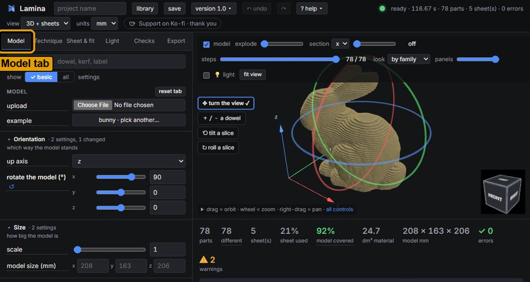
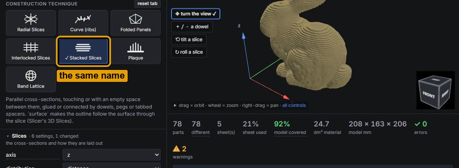
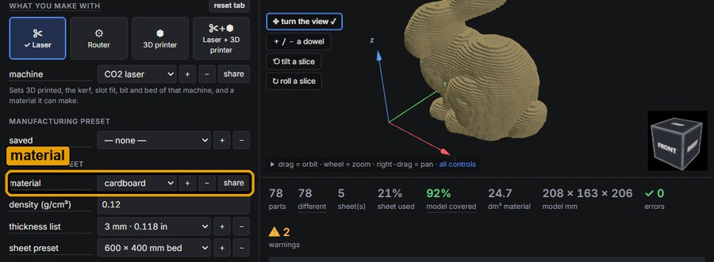
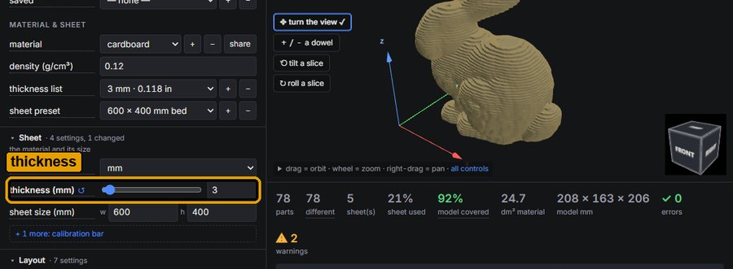
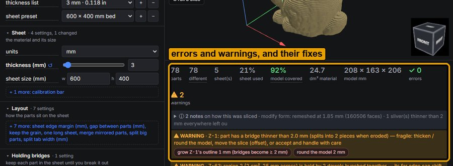
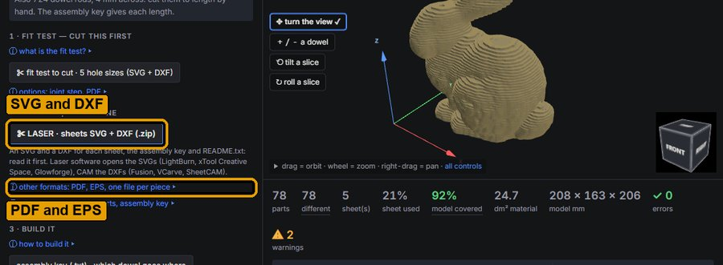

A free Slicer for Fusion 360 alternative, and more
Autodesk stopped Slicer for Fusion 360, and 123D Make before it. The download is gone. Lamina does the same job: it turns a 3D model into flat parts for a laser cutter or a CNC router. It can also print the parts on a 3D printer. It is free and open source, it runs in your browser, and it does more than the original.
Side by side
| Slicer for Fusion 360 | Lamina | |
|---|---|---|
| Status | Discontinued by Autodesk. No updates since about 2020. | Open source (AGPL-3.0) and maintained. A new version every few weeks. |
| Price, account | Free. Saving to the cloud needed an Autodesk account. | Free. No account, and nothing is uploaded. |
| Where it runs | A desktop app for Windows and macOS. | In your browser, or on Windows, macOS and Linux with Python or Docker. |
| Machines | Cut plans for any cutter. | Laser, CNC router, plasma, vinyl cutter or 3D printer, with named machines and their beds. Or laser + 3D printer in one job. |
| Models in | STL, OBJ, 3DMK. | STL, OBJ, 3MF, PLY, OFF, GLB. STEP and BREP with the CAD extra. |
| Techniques | Stacked Slices, Interlocked Slices, Curve, Radial Slices, Folded Panels, 3D Slices. | All six, plus Plaque and Band lattice. Also ring slices, several radial axes, and branches on a curve for legs and tails. |
| Checks | A red outline on a part with an assembly error. | Checks that every part is held, can be cut and can go in. Most messages have a one-click fix. |
| Packing | Automatic. | By each part's outline. Small parts go in the hollows of big ones. |
| Labels | Part names such as Z-6-2. | Part names, dowel numbers and arrows in a single-stroke font, and an assembly key. |
| Files out | PDF, EPS, DXF. | SVG, DXF, PDF, EPS, and one file per piece. 3MF print plates with settings for each part. STL and STEP. |
The parity notes compare the two option by option and say what is still missing.
Move a project to Lamina
The pictures show the bunny example that the link opens, in stacked slices. An orange ring with a label marks the control to use.
- Export your model as STL, OBJ or 3MF from Fusion 360 or any other app. Lamina does not open .3dmk files.
- Open Lamina on Stacked Slices. It opens on the Model tab, with
the bunny example.

- In upload, choose the file.

- On the Technique tab, click the technique with the same name. The table below gives the names.

- On the Sheet & fit tab, in material, pick your material.

- In thickness (mm), type the real thickness of your sheet.

- Read the errors and warnings under the 3D view. The buttons under a message fix it.

- On the Export tab, click LASER · sheets SVG + DXF (.zip) for your laser software. For PDF and
EPS as before, open other formats.

| In Slicer for Fusion 360 | In Lamina |
|---|---|
| Stacked Slices | Stacked slices |
| 3D Slices | Stacked slices with slice outline set to outer, then sand down to the shape |
| Interlocked Slices | Interlocked slices |
| Curve | Curve, ribs |
| Radial Slices | Radial slices |
| Folded Panels | Folded panels |
What the original did not have
- Physical checks with fixes. Auto-fix adds crossing slices, rings or spines where pieces float, and lists what it did. It never deletes a piece of your model.
- Interlocked slots that fit hollow shapes. Lamina calculates the slot depth at each crossing from the mesh, so hollow and uneven shapes notch correctly.
- Radial slices on more than one axis, for a dumbbell, a snowman or a head above a body.
- Plaque and band lattice, two new techniques.
- Fifteen joints for folded panels: glue tabs, laces, rivets, strips, slotted ribs for sheet metal, and click and snap joints for printed panels.
- Seams where you want them. Click an edge to put a seam there, and select faces to keep only a part, such as a mask.
- Light preview. Put a small LED inside and see the light and shadows on the walls before you cut.
- Printed parts. Print the parts in PLA or PETG, or mix laser-cut layers with printed standoffs.
- Edit by hand. Move, tilt or delete one slice, and the parts, checks and sheets follow.

Where Lamina is behind
Lamina is young: an alpha, made in the open by one person. Some things do not work the way you expect yet. Read the checks and test-cut before you use expensive material. If something breaks, tell me. Every report makes the next cut better.